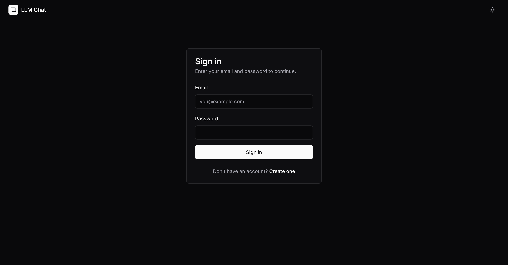
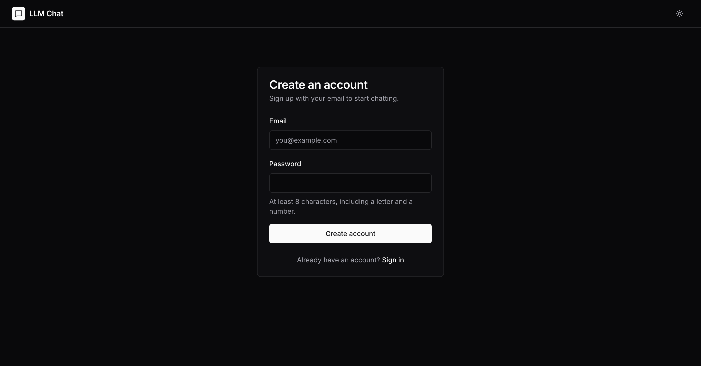
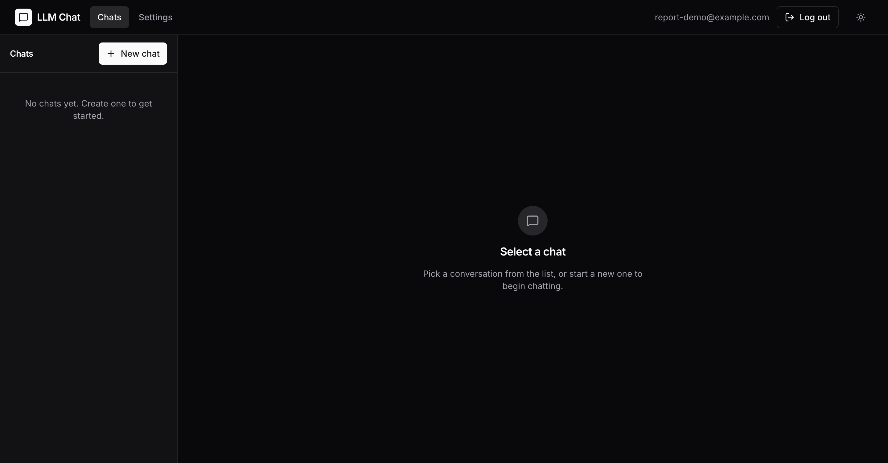
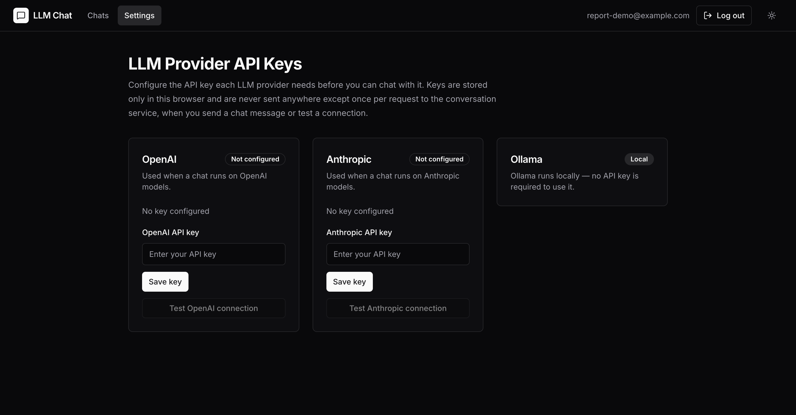
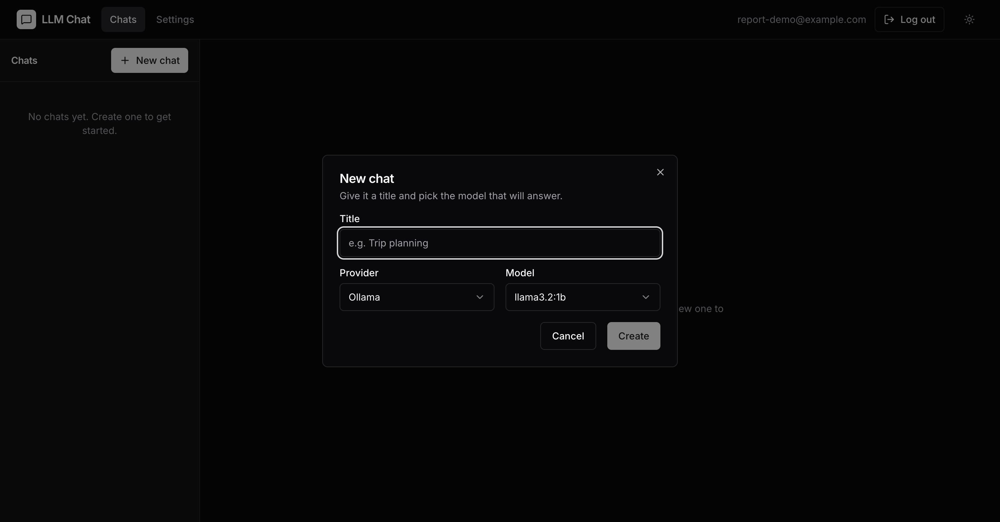
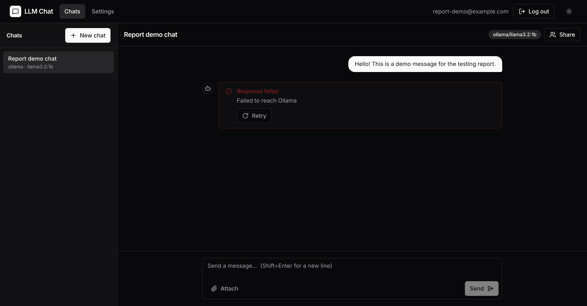

The Project
What the AI Chat Platform actually is, and what a user can do with it. This is the application every test in this report runs against.
What it does
A browser-based chat app that talks to a real AI provider using the user's own API key. A person signs up, logs in, adds an Anthropic or OpenAI key in Settings, then creates chats and sends messages. Replies stream in live, token by token, over a server-sent-events connection. Chats can hold file attachments, be renamed or deleted, and a reply can be stopped mid-stream.
Nobody's provider key ever touches the server's database. It is entered in the browser and sent only on the request that needs it.
Core features
Email and password sign-up, login, logout. Sessions are short-lived JWTs with a rotating refresh token.
Add, update, remove and test-connect an Anthropic or OpenAI key. Stored in the browser only.
Create, rename, open and delete chats. Each one keeps its own message history and provider/model choice.
Tokens render as they arrive over SSE. A reply can be stopped mid-stream, and the partial answer is kept.
Text, PDF and image files up to 10 MB, attached to a message and sent to the provider as context.
Every chat, message and attachment is scoped to its owner. One user can never read another's data.
Screens
Live screenshots, taken from the app running at
http://127.0.0.1:8000/.

Login

Sign up

Chats, empty state

Settings, provider API keys

Starting a new chat

A sent message in a chat
User flows covered in this report
These six flows are the 5 functionalities from Part 1, plus logout, each with its own requirement, test cases and automated Playwright spec.